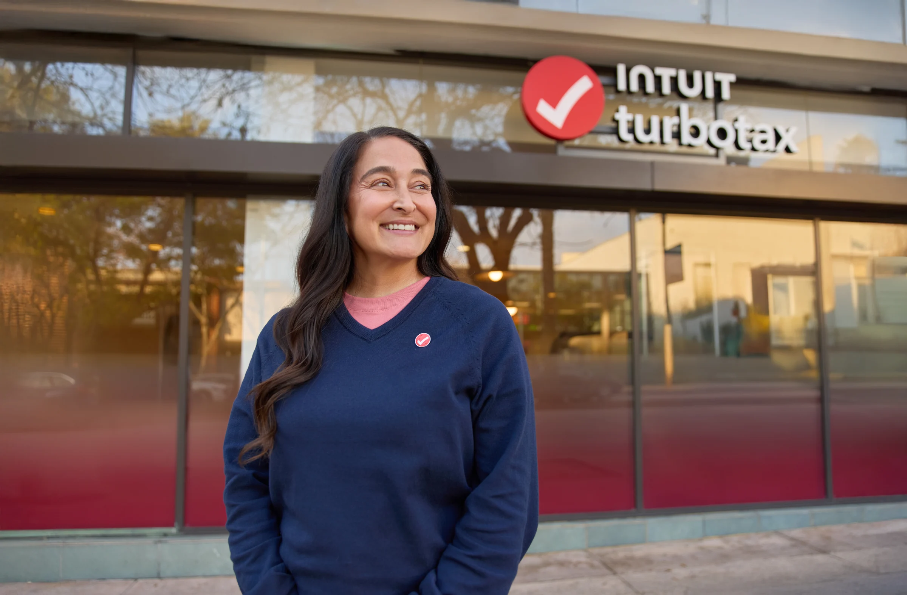
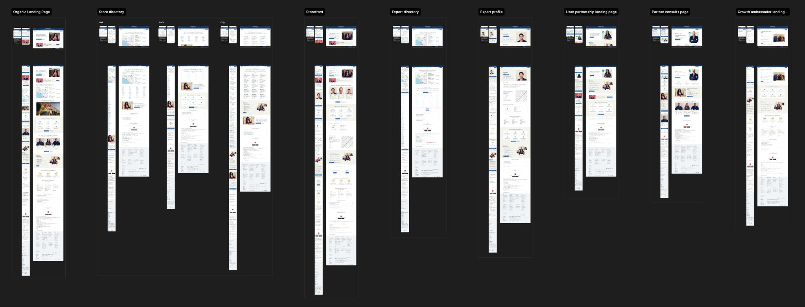

Principal Product Designer · Intuit
Put me on the hardest problem.
I build the /strategies
that solve it.
Work

Activate Experts
How do you build a front door that filters for the right customer, not just any customer?
Full Service
How do you cut an 18-day wait to a few hours without rebuilding from scratch?

Business Tax
How do you grow a product category most customers don't know exists?
About
The public tier of my about-me file — the output of /create-about-me, a skill I built with Claude.
>
↵ run
Approach
Framing
The real problem is rarely the stated one.
I work upstream of the brief. In Business Tax, the program was optimizing starts. I named the broken architecture causing them. A problem with no owner, no PRD, no prior framing. That reframe changed what got built, not just how it looked.
Systems
Build what the next ten screens inherit from.
Pattern libraries, diagnostics, test cascades designed to compound. I don't design a screen, I build the structure that makes the next ten faster and more coherent. Vision and execution in parallel, not in sequence.
Fluency
Know what the data is actually saying.
I track business outcomes, not just UX metrics. I read experiment results and know when a finding is real, when it transfers to another surface, and when a number is being asked to mean something it doesn't.
Experience
-
IntuitPrincipal Product Designer
2017—Today · 8+ yrsT6 · Activate Experts, AI-assisted acquisition strategyI own the acquisition strategy and design for Assisted Tax entry points: organic, paid, storefront, and expert profile surfaces. Equal parts design and analysis. Central finding: not all CTAs work the same way on all surfaces. Some filter for the right customer. Others drive volume. Deploying the wrong one costs in both directions.Aug 2025—TodayT6 · TurboTax Business, sole proprietor top-of-funnelStrategic design lead on TurboTax Business, focused on the sole proprietor top-of-funnel. My read: the program's starts problem was a symptom. The product had been built around internal org structure, not around how the customer actually files. A four-test cascade shipped across the season. Breakout win: business tax revenue lifting ~18x in the affected cohort.Dec 2024—Aug 2025M3 · Full Service, design leadLed design for consumer and expert experiences across Full Service. Managed a team through a high-volume season while maintaining quality and cross-functional alignment.2024T3–T6 · Full Service, built from the ground upLead designer across consumer and expert-facing experiences for TurboTax Full Service. Drove strategic design decisions across a complex end-to-end flow from customer entry through filing completion. Joined working on DIY tax, then moved to Full Service as it was being built, helping design the end-to-end experience from scratch, including consumer flows, expert tools, and the operational connective tissue between them. Scott Cook Innovation Award
Reduced average return completion time from 22 days to a few hours and increased same-day margin by 97%. In August 2022 it became the primary approach across all Full Service versions.2017—2024
Scott Cook Innovation Award
Reduced average return completion time from 22 days to a few hours and increased same-day margin by 97%. In August 2022 it became the primary approach across all Full Service versions.2017—2024
Earlier career
-
Mirum Agency
Associate Design Director · 2013—2017
-
StudioPMG
Art Director · 2010—2013